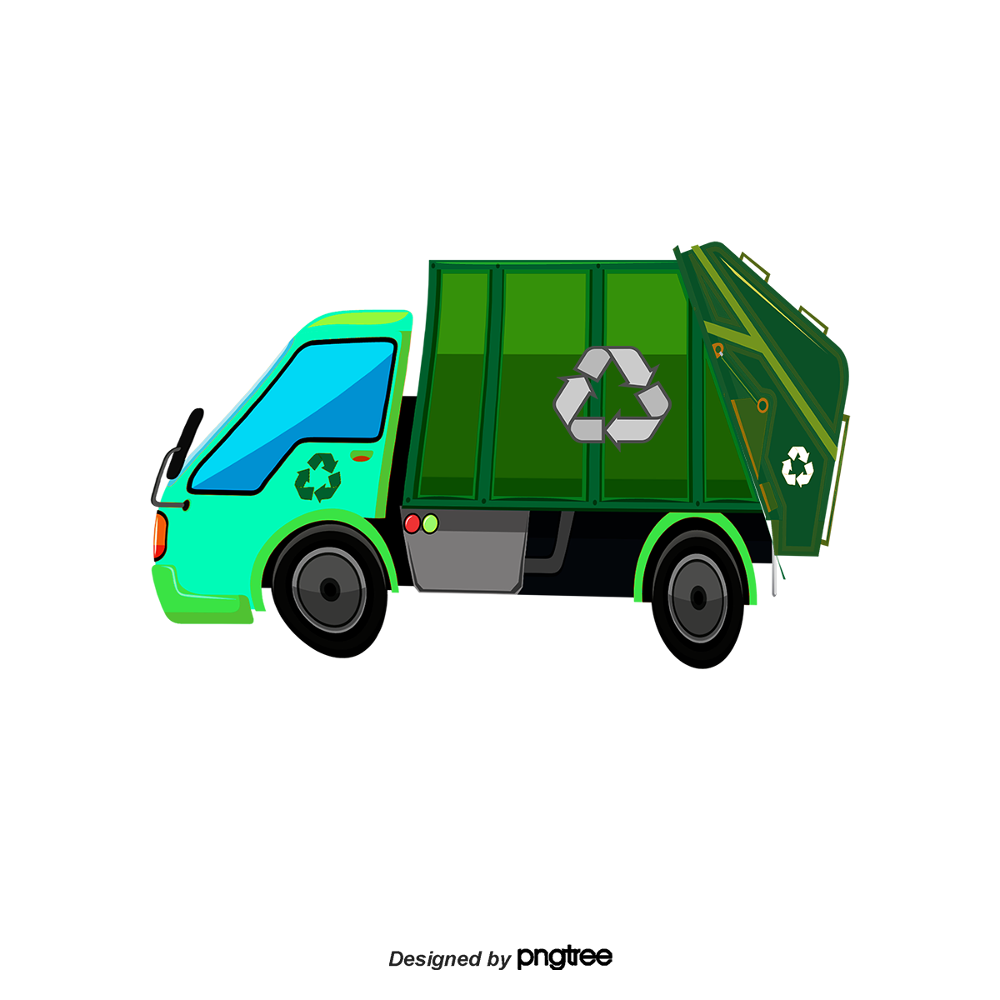

Global Food Waste
Food Waste and Hunger
Interactive Exploration
Food Waste Report
About Us
Works Cited
Works Cited
Sources and references used in the Global Food Waste Analysis App
References
Global Food Wastage Dataset (2018–2024):
https://www.kaggle.com/datasets/atharvasoundankar/global-food-wastage-dataset-2018-2024/data
GDP Growth (Annual %):
https://data.worldbank.org/indicator/NY.GDP.MKTP.KD.ZG
Prevalence of Undernourishment (% of population):
https://data.worldbank.org/indicator/SN.ITK.DEFC.ZS
Color Palette Generator:
https://coolors.co/142532-c13050-2e7046-764f4a-eac33b-8eba99
ChatGPT - Support Tool:
https://chatgpt.com/